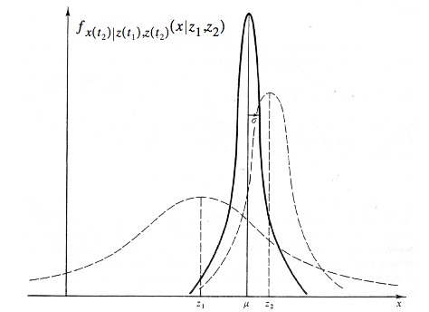

Table of Contents
CMU Notes
Cool Classes I Might Take
- 42-444 Medical Devices
- 42-580 Bioinstrumentation (op-amp circuits and stuff)
- 15-440 Distributed Systems (Fall), talks about MapReduce and Hadoop. Useful if you have a large amount of computers at your disposal solving an interesting problem…Google has lots of class notes on it too: http://code.google.com/edu/parallel/. It's still really hard to do this stuff, but useful if you're rolling out GigaPan or some other “big-data” website
- Computer Vision (Spring, possibly grad course instead)?
- 05-331 Building Virtual Worlds?
- 39-245 Rapid Prototype Design, and other classes in CIT Design Minor
- 05-540 Rapid Prototyping of Computer Systems
- 42-580 BioInstrumentation. Hands-on circuit design for biomedical stuff?
- 57-109 Elective Studio Guitar Class (3 units)
- 11-344 Machine Learning in Practice, easier version of Machine Learning?
- 15-381 Artificial Intelligence
Ray Yun Recommendations for Design/Art
Hey, Nolan. Here are the courses that you might be interested in. Check these out. Probably, you may like prof. Eric Paulos(environmental,green technology), Scott Hudson, Anind Dey(Ubi- Comp), Golan Levin(Interactive Art), Jason Hong… etc.. If you have any question on this(HCII,Computational Design,Interactive Art stuff) or anything I can help, let me know.
https://enr-apps.as.cmu.edu/open/SOC/SOCServlet?CourseNo=51482&SEMESTER=S11&Formname=Course_Detail
https://enr-apps.as.cmu.edu/open/SOC/SOCServlet?CourseNo=05899&SEMESTER=S11&Formname=Course_Detail
https://enr-apps.as.cmu.edu/open/SOC/SOCServlet?CourseNo=05837&SEMESTER=S11&Formname=Course_Detail
https://enr-apps.as.cmu.edu/open/SOC/SOCServlet?CourseNo=05499&SEMESTER=S11&Formname=Course_Detail
https://enr-apps.as.cmu.edu/open/SOC/SOCServlet?CourseNo=05872&SEMESTER=S11&Formname=Course_Detail
https://enr-apps.as.cmu.edu/open/SOC/SOCServlet?CourseNo=05610&SEMESTER=F11&Formname=Course_Detail
https://enr-apps.as.cmu.edu/open/SOC/SOCServlet?CourseNo=51759&SEMESTER=F11&Formname=Course_Detail
The Bottom two are provided on Fall.
Susan Finger Recommendations for Rapid Prototyping
Nolan,
Check the following faculty to see what they are offering. They all use rapid prototyping in their courses.
- Mark Gross (architecture) (very open to non-archies)
- Jeremy Ficca (architecture)
- Eric Paulos (HCII)
- Golan Levin (Art)
Capstone Ideas
- Figuring out heart beat from face video data…seems to need ICA. Online DEMO!!!. More examples
ECE IMB (5th Year) Master's Program
- If you are a TA, you get 1/3 of your tuition waived. Nice! Maybe RI will give you a discount as a student too.
- CMU full-time staff get 2 free classes! CMU is ~$600 per credit hour = ~$10000-$14000 in savings! Yikes…
Requirements
- 96 total units: (>500 is grad)
| 48 + 12 units of ECE/CS Grad Classes | < 12 units Undergrad Classes | 15 Grad Project Units |
|---|---|---|
| Adv. DSP Patt Rec. MLSP Distributed Embedded Systems Applied Stochastic Processing —– | Comp. Vision ——— | No paper req'd |
Classes I Liked
- Classes that were practical in nature, such as Gadgetry or Intro to Robotics.
- Math is cool, but I don't really want to study it that much unless I can use it in something I'm doing. My math/physics roommate cringes every time I say this, and I would agree. I'm just not comfortable with calc (I got a C in every calc class >.<). Pro Tip: Take all the calc you can in high school! You get tons of problems (unlike college), the teachers are more enthusiastic (sometimes), and the tests aren't tricky or worth a ton (unlike CMU's math department)! You'll learn it much better and be more comfortable with u-subbing and changing variables

- Take 36-217 (statistics) with Genovese
- I think cooler classes will come over the next year.
| Fall 2011 |
|---|
| Breadth: 15-211: Algorithms |
| Depth: 18-491 Fundamentals of Signal Processing (DSP). Syllabus, Oppenheim 3rd preferred over 2nd, Lyons (easier) book |
| Elective: Intro to Music Technology |
| M.S.: 18-794 – Pattern Recognition Theory |
| M.S.: Neural Signal Processing (not sure if I can take in Spring though…) |
| |
| Drop into 18-342? Principles of Embedded Systems (ARM) |
| Spring 2012 (tenative…and a bit ambitious I might add) |
|---|
| NEED TO TAKE ANOTHER MUSIC CLASS (Electronic and Computer Music?) |
| Capstone: 18-551 Digital Communication and Signal Processing Systems Design (Spring 2012) |
| Elective: 15-385 Computer Vision (spring only), or take as Grad credit… |
| M.S.: Machine Learning |
| Coverage/Elective: 18-474 Embedded Control Systems |
| Coverage/Elective: 18-348 Embedded Systems Engineering (Koopman) |
| Sound Editing and Mastering (6 units) |
| Fall 2012? |
|---|
| M.S.: 18-649 Distributed Embedded Systems, work in teams (Koopman) |
| Machine Learning for Signal Processing |
| Basic/or not? Harmony I or II (you will get a link to placement test if you sign up) |
| Design Class that Jason Choi recommended |
| Stochastic Signal Processing (recommended by Alex Holland), you have some books too |
| Spring 2013 |
|---|
| 39-245 Rapid Prototyping |
| 16-745 Dynamic Optimization (Chris Atkeson), saw poster about it |
| 16-720 Computer Vision grad class, hard but really good |
| Neural Signal Processing ? |
Suyog's Course Suggestions
- Neural Signal Processing, similar to Machine Learning. Awesome course apparently
- Machine Learning, pairs with Pattern Recognition (spring???)
- Control Systems w/ ECE (spring only?)
- Machine Learning for Signal Processing sounded really cool, he might take it in Fall '11
- Don't take Speech Recognition
Andrew's Course Suggestions
- CMU is not very practical. You have to search for the practical teachers and make sure to take their courses!
- He is taking Control Systems. I might not be as interested in it, but maybe embedded control systems…
Other suggestions
- Machine Learning for Signal Processing is basically a project class that you teach yourself the material for doing a specific area, probably in speech. Neural Signal Processing is probably better.
Classes & Courses I Want To Take
- 42-580 Special Topics: Bioinstrumentation | 9 Units | Fall
- 42-431: Biomedical Image Processing. I seem to remember this class being math heavy? Very similar to pattern recognition, so maybe pick between the two classes?
- 42-731/18-795 Bioimage Informatics, grad class covering a lot of wavelet transform stuff.
Good Courses That Don't Work Yet
- 15-381: Artificial Intelligence (211 is a pre-req for this class)
- Computer Vision (not offered during Fall?)
Required Courses to still take
- Sound Editing & Mastering or Electronic & Computer Music (after intro to computer music)
- Not sure which one I should take, but either will fill up gen ed depth req's
- Should you use personal research as a way to get 12 units of coverage credit? (or just take another ECE class…)
Topics that sound cool
- Gesture Recognition (or anything recognition…)
- Wii Want To Write (final report for 18-551 by some ECE students). Does gesture recognition on the Wii Remote using Dynamic Time Warping (not as modern as hidden markov models apparently though according to Stern). Good paper!
- Adaptive Filtering…“a filter that self-adjusts its transfer function according to an optimization algorithm driven by an error signal”. Rad. Probably in Patt Rec?
- Kalman Filtering: A way to fuse multiple sets of data together that are related that also have noise. Most often used for Inertial Measurement Units (IMU's) and apparently satellites.
| The Kalman Filter: Introduction to Concepts by Maybeck |
|---|
|  |
- Intro to Robot SLAM Thesis. Copies a bit from Maybeck's first chapter, but he states that. Got to page 28 and is a good applicable read. Just ended as the robot was moving and doing Kalman.
- SLAM for Dummies. A little more complicated than the above link, but still good.
- Society of Robots forum posting providing code and examples by a CMU guy. Not sure who, but he's in RI.
- Where's the wiimote? You've seen this one before! Very mathy and not much explanations, but perhaps some sample code! Cool :)
- Blog Tutorial. Ended up not being kalman filter, but a simple version of a low-pass filter.
Fall 2011
- 18-348: 8-bit Microcontrollers
- 18-320: Microelectronic Circuits? Seems useful, might want to check prof though
- 15-211: Algorithms
-
- Hard, but good learning
- Fall only
- Ask Amber Xu for more info
- 18-491 Fundamentals of Signal Processing (DSP)
Eventual Classes
- 15-386 Neural Computation is a fun eventual class
- 18-474 Embedded Control Systems (Spring I think…)
* 18-493 Electroacoustics (Fall 2011)
- 18-492 Special Topics: Speech Processing
* 18-496 Introduction to Biomedical Imaging and Image Analysis (Fall 2011)
- Also, it’d be good to talk to Suyog
18-447 Introduction to Computer Architecture(Spring 2012?)
18-794 – Pattern Recognition Theory (Spring 2011…2012?). Heard good things about this class. Taught by Mario Savvides. Demo at end of semester?
Humanoids
Capstone: 18-551 Digital Communication and Signal Processing Systems Design (Spring 2012)
The reason Machine Learning has 211 as a pre-req is because you’re dealing with pruning a lot of trees, etc. It’d be a fun class, I think, but a lot of CS work that relies on 15-121 skills.
27 units of Music Technology
NOTE: 2 6-unit classes = 1 9-unit class
- Sound Recordiung I (6 units)
- Sound Editing and Mastering (6 units)
- Multitrack Recording (9 units)
- Introduction to Music Technology (6 units)
- 3 more credits…independent piano/chord theory?
Fun Classes
- Welding
- Image Processing
- Computer Vision (15-385?) Which one is Suyog taking?
Sound Stuff
- Sound Recording
- Electroacoustics
- Physics of Musical Sound
Random Notes
- Printer in ECE D-Level is Lukas. Under \\eceprint
- You can print to ECE printers from your laptop! ECE Printing Help Link
Hmm..